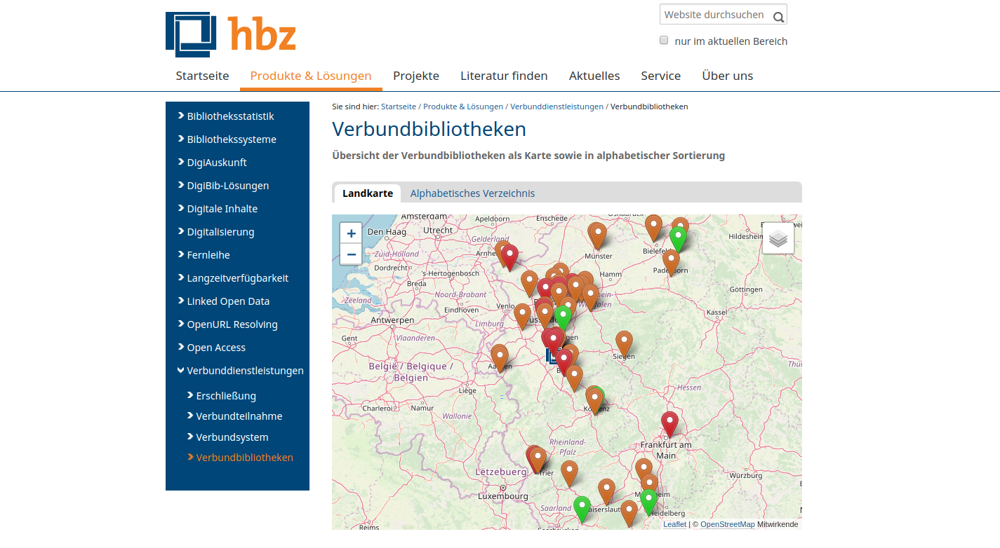
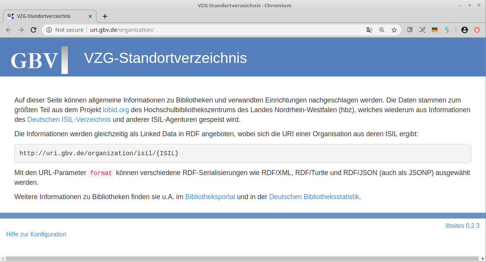
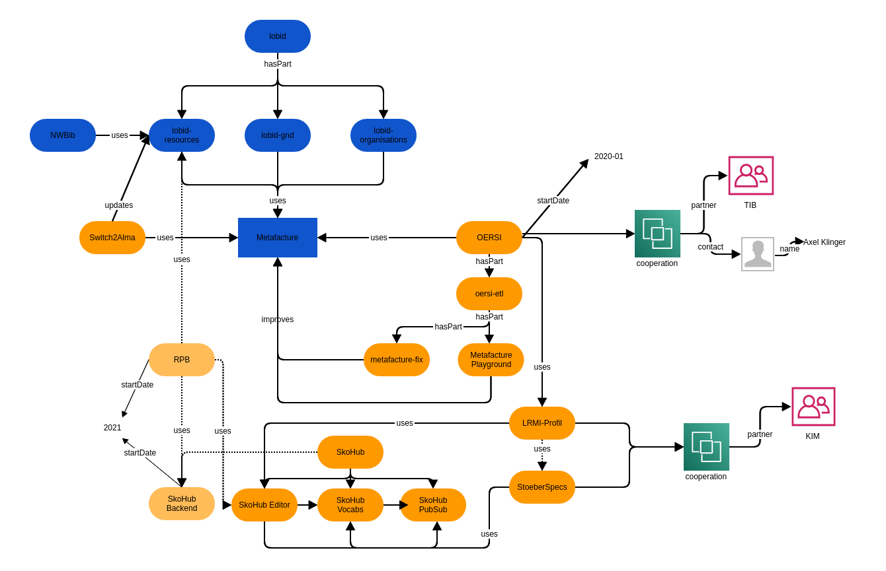

Offene Infrastruktur
Produkte, Projekte, Ziele
Adrian Pohl
Offene Infrastruktur, Hochschulbibliothekszentrum NRW (hbz)
Köln, Februar 2021
Diese Präsentation:
http://slides.lobid.org/2021-02-offene-infrastruktur/

Agenda
- Die Gruppe
- Produkte
- Projekte
- Was macht die Gruppe noch?
1. Die Gruppe
Offene Infrastruktur
Neue Gruppe seit September 2019
Drei Entwickler*innen: Fabian Steeg, Katinka Tauber, Pascal Christoph
Zwei Bibliothekare: Adrian Pohl, Tobias Bülte
Produkte: lobid, Metafacture, SkoHub, NWBib
Leitmotiv "Openness"
Publikation von Daten und Software unter offen Lizenzen
Nutzung und Mitentwicklung offener (Web-)Standards
Transparente Entwicklungsprozesse
Offene Entwickler*innen-Community
Alle Publikationen (Slides, Blog, Zeitschriftenartikel etc.)
sind Open Access
Siehe auch das hbz als Träger des Open Library Badge
Webbasierte Infrastruktur für:
Standardisierung von Schnittstellen und Daten
Erfassung von Daten (gemäß gemeinsamer Standards)
Speicherung und Präsentation von Daten
Bereitstellung von Programmierschnittstellen für Daten
Transformation von Daten (ETL: Extract, Transform, Load)
Unser Selbstverständnis
Leistungsfähige, flexible und zuverlässige Werkzeuge und Dienste
Offene und transparente Entwicklung
Offenheit für Kooperation mit externen Institutionen
Kompetente und zügige Reaktion auf
Fehlerberichte und Anfragen
2. Produkte
2.1 lobid


lobid steht für Linking Open Bibliographic Data
seit fast zehn Jahren die zentrale Komponente der offenen Infrastruktur im hbz
stellt intuitive Rechercheoberflächen und webbasierte Schnittstellen bereit
lobid: Nutzungsbeispiele

Verbundbibliotheken auf hbz-Website
Basiert auf lobid-Organisationsdaten
VZG-Standortverzeichnis
Basiert auf lobid-Organisationsdaten

Edoweb und Fachrepositorium Lebenswisschenschaften (FRL)


Enge Integration der lobid-Verbunddaten und des lobid-Datenmodells
In Publisso auch GND-ID-Lookup via lobid
GND-Lookup im Fachrepositorium Lebenswissenschaften


NWBib

Webanwendung, die nahezu vollständig auf lobid-Daten basiert
Bibliothekskatalog des Juristischen Seminars der ULB Bonn

Basiert auf täglich aktualisierten lobid-Daten


Discovery-Index der UB Dortmund

Titeldaten zu den Beständen der UB & einiger umliegender Bibliotheken
werden täglich von lobid geholt, transformiert und in den Index geladen

Virtuelle Deutsche Landesbibliographie

Seit April 2018 ist nwbib.de in die VDL integriert

Kalliope

Anzeige von externen Links (z.B. Wikipedia) aus lobid-gnd auf Personenseiten
Abgleich und Anreicherung lokaler Archivdaten mit der GND
 Unter Nutzung von OpenRefine und der entsprechenden lobid Reconciliation API
Unter Nutzung von OpenRefine und der entsprechenden lobid Reconciliation API

Infoboxen zu Personen aus der GND
 Außerdem Nutzung der lobid Reconciliation API zum
Außerdem Nutzung der lobid Reconciliation API zum Mappen großer Mengen von Personendaten auf die GND
Das sagen die lobid-Nutzer*innen


"Für mich ist lobid die Rechercheoberfläche für die GND und ich empfehle den Dienst allen Kolleg*innen."
– kürzlich erhaltenes Feedback eines Kollegen aus WienDatenquellen und -formate

Ziel: Alma-Migration ohne API-Bruch
Projekt zur Migration auf Alma läuft
Hauptarbeit: Anpassung der ETL-Prozesse auf neue Ausgangsdaten aus Alma zusätzlich zu Aleph-Daten
Im Idealfall wird sich für die API-Nutzer*innen durch die Migration nichts ändern
2.2 Metafacture
ETL-Werkzeugkasten
ein modulares, vielseitig einsetzbares ETL-Toolkit zum Prozessieren (semi-)strukturierter Daten
seit 2013 an der DNB entwickelt
Offene Infrastruktur/hbz ist seit 2019 Maintainer
Nutzer*innen: OI, DNB, UB Dortmund, Gruppe Portale im hbz, ...
Ziele
Zwei Projekte, um die Community zu vergrößern und Metafacture im hbz als gemeinsame ETL-Lösung zu etablieren
Metafacture-Fix: Vereinfachung der ETL-Konfiguration, um sie Entwickler*innen zu erleichtern und für Bibliothekar*innen zu öffnen
Metafacture Playground: einfache Nutzung von Metafacture im Web und Aufbau einer Community zum Teilen von ETL-Prozessen
2.3 SkoHub
Vielfältiger Nutzen
Git- und webbasierte Infrastruktur für die Pflege und Publikation kontrollierter Vokabulare (SkoHub Vocabs)
JSON-Schema-basiertes Webformular (SkoHub Editor)
Forschung/Innovation: Aufbau einer offenen, webbasierten, dezentralen Infrastruktur für neuartige Discovery-Lösungen
SkoHub-Nutzer*innen
Kompetenzzentrum Interoperable Metadaten (KIM): Publikation gemeinsamer kontrollierter Vokabulare (HCRT, Hochschulfächersystematik)
Kerndatensatz Forschung: Publikation einer Klassifikation für interdisziplinäre Forschungsfelder
Wir lernen online: Publikation verschiedener kontrollierter Vokabulare
GWDG unterstützt bei der Weiterentwicklung
Ziele
Etablierung von SkoHub Vocabs als anerkannte Software and a Service für die Publikation kontrollierter Vokabulare
Weiterentwicklung von SkoHub zu einer vollständigen Lösung zur Erstellung, Pflege und Publikation von FAIR und LOUD Data durch Ergänzung eines Moduls zur Speicherung und Pflege von Daten
Mittelfristig: Produktive Nutzung des PubSub-Anstatzes für die Push-basierte Discovery relevanter Ressourcen mittels kontrollierter Vokabulare
3. Projekte
OERSI & Orca
Gemeinsames Projekt mit der TIB Hannover
Einsammeln von OER-Metadaten und Angebot eines OER-Index mit API und UI
OI ist für ETL zuständig und nutzt das Projekt zur Weiterentwicklung von Metafacture (s.o.)
Gleichzeitig ist OERSI-Projekt Basis für die Entwicklung von Best Practices der Metadatenvergabe im Rahmen von KIM
Ziele: OERSI ist meistgenutzter Dienst zur Recherche nach Hochschul-OER im deutschsprachigen Raum; OERSI spielt durch die Integration in ORCA eine zentrale Rolle in der landesweiten OER-Infrastruktur
LRMI-Metadatenprofil
Entwicklung eines Metadatenprofils auf Basis des OERSI-Anwendungsfalls
Kontext: Kompetenzzentrum Interoperable Metadaten (KIM)
Nutzung von SkoHub für kontrollierte Vokabulare (s.o.) und den im StöberSpecs-Projekt entstandenen Werkzeugen und Prozessen
Ziel: die durch KIM publizierten Empfehlungen sind die zentrale Referenz im deutschsprachigen Raum für die Umsetzung von Metadatenformularen und -schnittstellen
Rheinland-Pfälzische Bibliographie (RPB)
Auftrag des LBZ: Softwaremigration für die RPB
Rückgriff auf jahrelange Erfahrungen mit der NWBib
Nutzt Metafacture und Teile von SkoHub
Geplant: Erweiterung von SkoHub um Backend zum Speichern von Daten (s.o.)
Versuch eines Überblicks 
Was macht die Gruppe noch?
Ideen und Umsetzung zur Entwicklung der hbz-Kommunikation
vielfältiger Einsatz von Blogs, Twitter und Mastodon
Pläne zum prototypischen Aufbau eines hbz Knowledge Graph (basierend auf den in der Gruppe genutzten und entwickelten Technologien)
Überregionale Kooperation: Entwicklung
Mitarbeit an der Entwicklung der GND, mit Fokus auf Entwicklungsschnittstellen
Beiträge zu verschiedenen anderen Tools,
z.B. OpenRefine und JSONLD-Java
Überregionale Kooperation: Standardisierung
DINI AG KIM, z.B. OER-Metadatengruppe
W3C Entity Reconciliation Community Group
Learning Resource Metadata Initiative (LRMI) @DCMI
Kompetenz- und Wissensvermittlung
Mitorganisation der SWIB-Konferenz (Semantic Web in Bibliotheken) gemeinsam mit der ZBW
Vorträge
Blogbeiträge, Zeitschriftenartikel
(siehe weiterführende Informationen)
Workshops, Seminare